|
AZ - Roda JC (2-0) 27 november 2005
|
Ken Leemans voor het eerst in de basis. Hij vervangt de geschorste Kah.
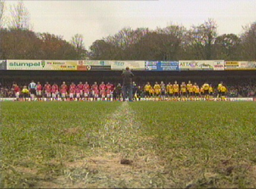
Het spande er even om of de wedstrijd door zou gaan vanwege het door
hevige regenval doordrenkte veld.
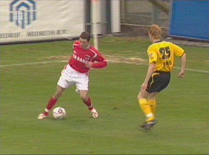
Leemans versus Arveladze.
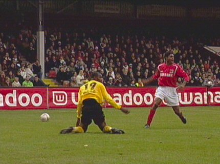
Overtredeing van Jaliens op Cissé.
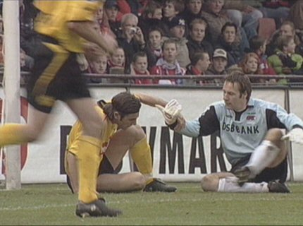
Hierop volgt een vrije trap genomen door Van Dijk wiens bal net niet door
Vicelich achter de jubilerende doelman Timmer (400 wedstrijden) wordt
gekopt.
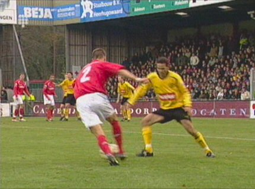
Sergio wordt gepasseerd door Steinsson, tekenend voor het beweeglijke en
zeer verzorgde combinatievoetbal van AZ.
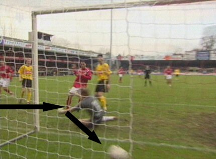
Diezelfde Steinsson speelt de bal breed waarna Landzaat simpel kan
intikken: 1-0, (34').
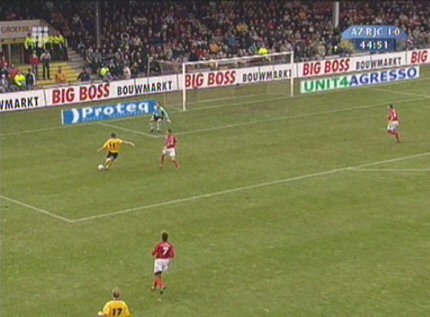
In de slotfase van de eerste helft krijgt Oper zijn tweede kansje. Timmer
houdt het doel klein en voorkomt een doelpunt.
De laatste keer in de Alkmaarderhout....
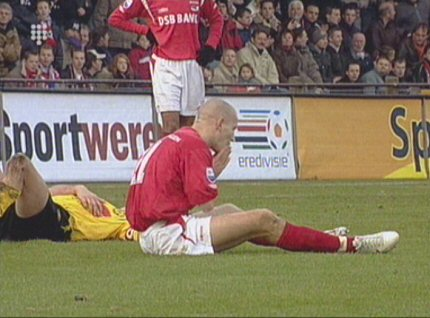
Zowel Bodor als Senden krijgen Huysegems niet afgestopt. Een harde
sliding van Senden binnen de zestien waarbij hij (onopzettelijk) hands maakt
voorkomt een bijna zeker doelpunt.
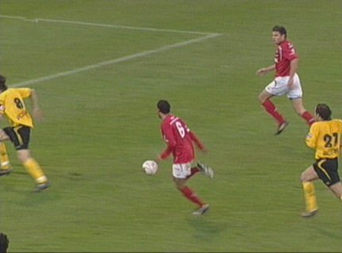
Invaller Koevermans wordt bediend door Sektioui. Koevermans haalt uit met
een vernietigend schot.
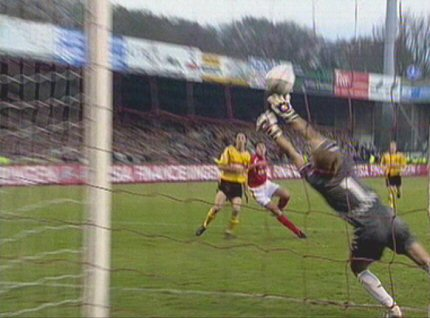
Kujovic is kansloos: 2-0, (89').
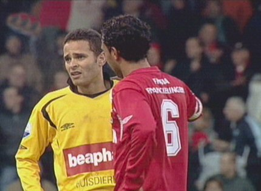
Weinig vreugdevol gezicht bij Sergio.
Roda JC pakt te weinig punten en staat op een zorgwekkende 14e plaats.
De hoop is gevestigd op de komende serie van vijf tegenstanders die
"te doen" moeten zijn. © Koempels Pleasure Dome
|